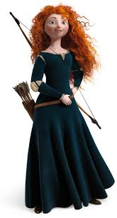

Having said all this, with this issue increasing in awareness, many of the new Disney princesses have portrayed characteristics that would be desirable and would give a positive message to young girls (and boys) throughout the nation.
Examples include Tiana, while she was gifted with the domestic ability of being a good cook, she wanted to own a restaurant.
And while the other princesses were working toward getting a man, Tiana was working to get her restaurant.
She has displayed passion and is hard working to achieve in what she loves to do, cooking.
And probably the most independent of all, Merida, conveying a strong message of perseverance and obviously girl power!